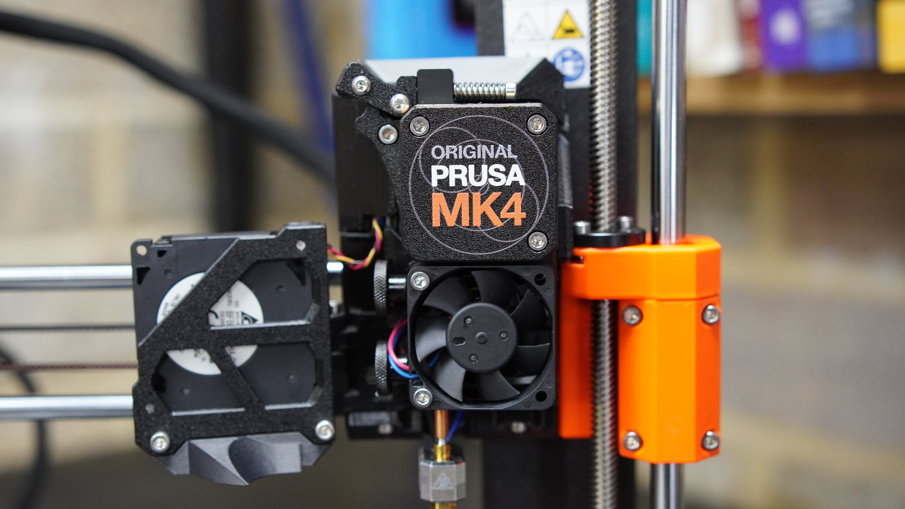
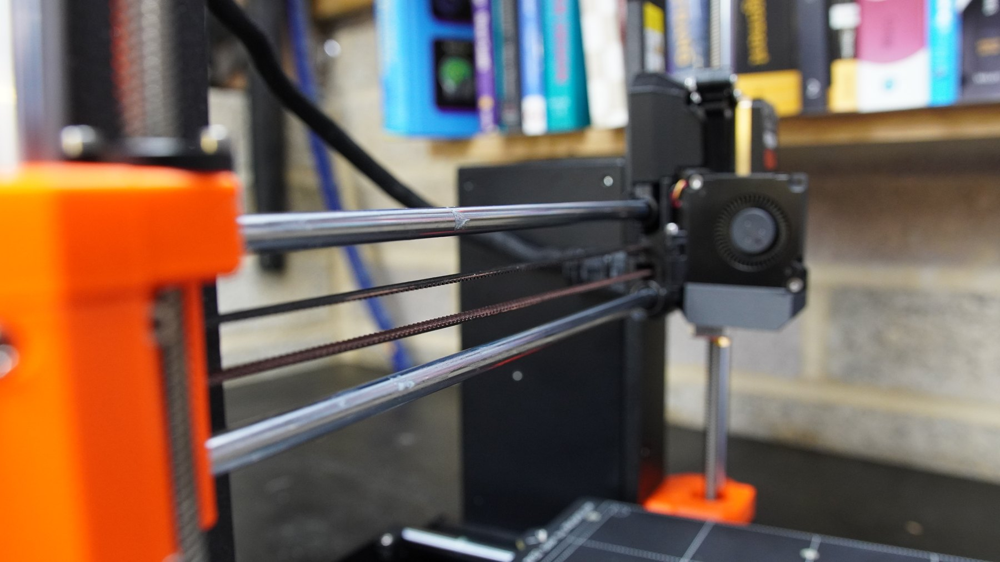
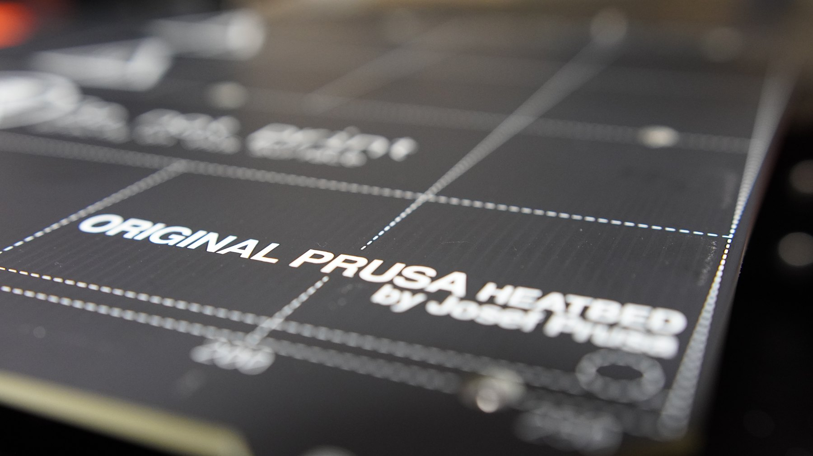
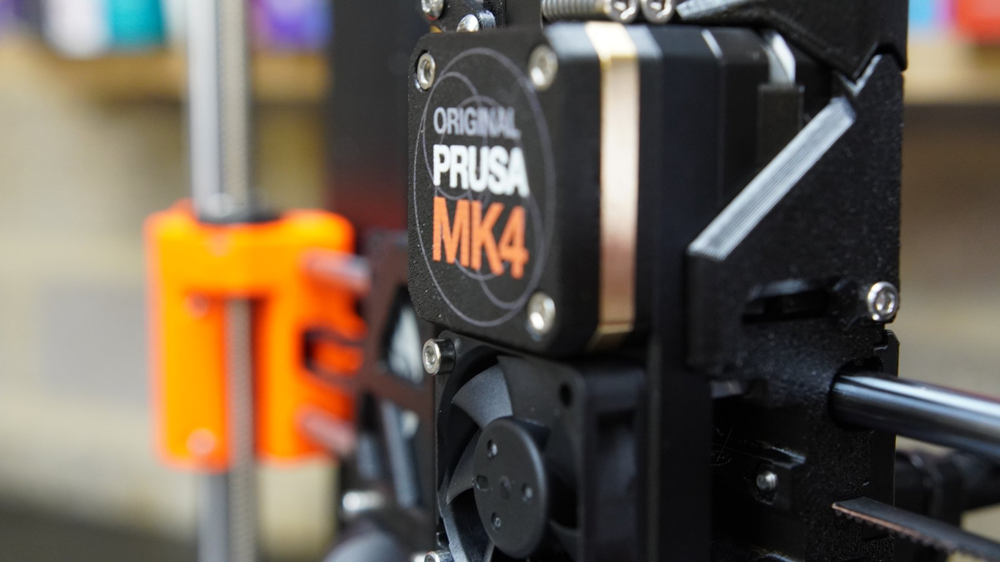
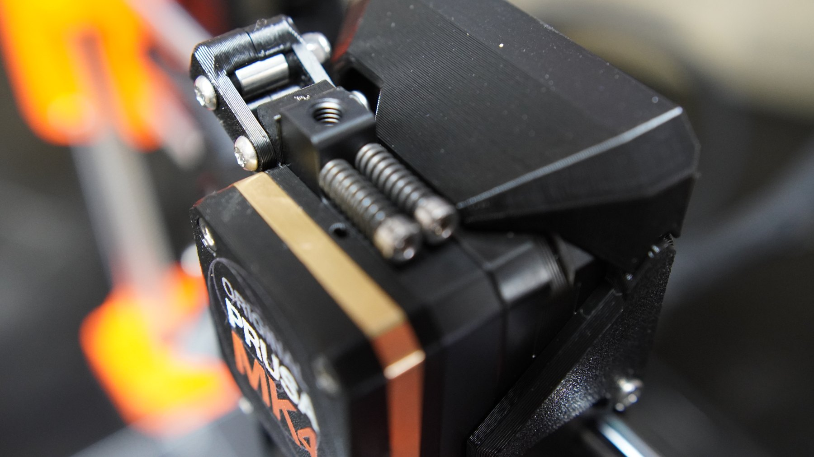
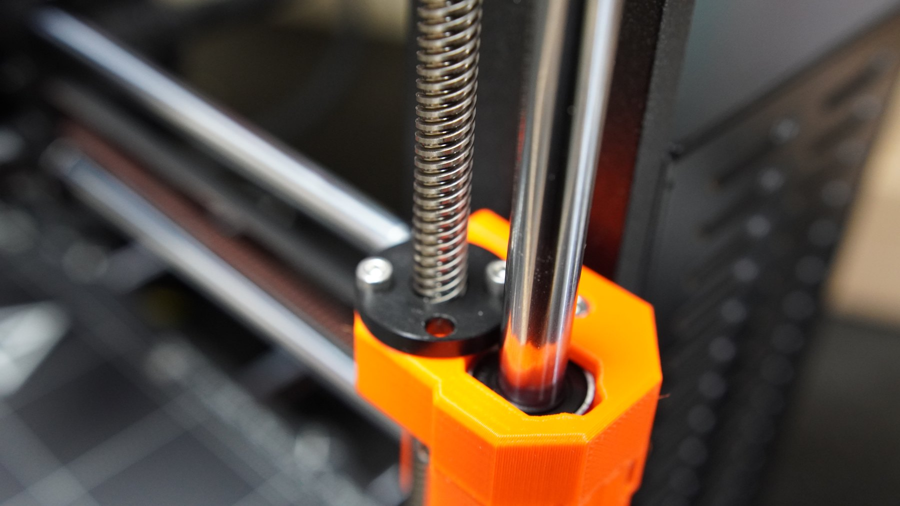
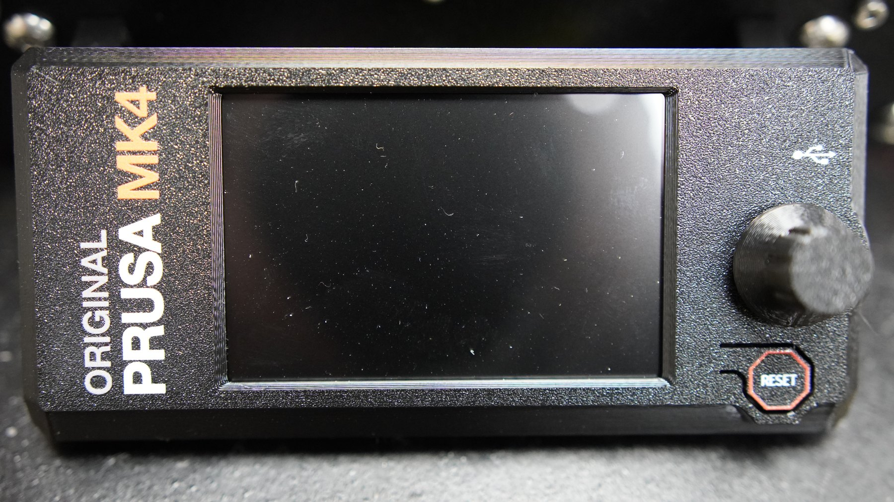

Christmas kit archaeology
Opening the boxes and finding the comforting promise of individually bagged parts.
Machines that make machines / Prusa MK4
A Christmas build of an Original Prusa MK4 kit: boxes, rods, printed brackets, bearings, wiring, screen, calibration and the slightly hypnotic pleasure of a machine becoming square, smooth and obedient one subassembly at a time.
I like 3D printers because they sit in that perfect workshop zone between software, mechanics, electronics and immediate consequences. You can think in CAD in the morning and hold a useful bracket in the evening. Dangerous, frankly.

Build arc
The raw footage is full-length build material, so I pulled it down to a handful of short clips: unboxing, rods and rails, frame assembly, wiring and the finished printer. Enough to show the texture of the work without making anyone sit through hours of screw sorting.
Opening the boxes and finding the comforting promise of individually bagged parts.
The satisfying stage where it starts looking less like a delivery and more like a precision machine.
Cable routing, controller wiring and the quiet hope that every connector is exactly where it should be.
The finished MK4 on the bench, ready to become part of the rest of the workshop ecosystem.
Mechanics
A printer is a lovely little reminder that software cannot rescue bad geometry forever. Rods, bearings, belts and leadscrews all have to move cleanly before the clever bits get their turn.
Electronics
The wiring stage is classic me territory: route it properly, strain-relieve it, check it twice, then pretend the first power-on is emotionally neutral.
Calibration
Bed, nozzle, belts and axes all become part of a feedback loop. It is not just assembly; it is learning how the machine reports its own state.
Why useful
For robot parts, brackets, fixtures, jigs and weird one-off workshop needs, a reliable printer changes the rhythm of a project. The idea gets physical faster.





